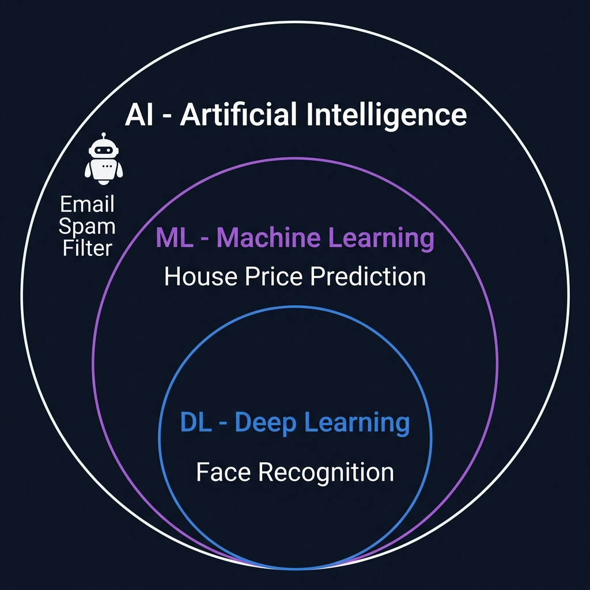

ما هو الذكاء الاصطناعي؟ What is Artificial Intelligence?
تعرّف على مفهوم الذكاء الاصطناعي AI وأنواعه الرئيسية مع أمثلة واقعية من حياتك اليومية ومن مشاريع حقيقية حول العالم.
١. تعريف الذكاء الاصطناعي Artificial Intelligence — AI
الذكاء الاصطناعي هو علم تعليم الكمبيوتر كيف يفكر ويتخذ قرارات بنفسه بدلاً من أن يُبرمَج لكل حالة يدوياً. الفكرة الأساسية: بدلاً من كتابة تعليمات صارمة، تعطيه أمثلة كثيرة ويستخرج القواعد بنفسه.
❌ البرمجة التقليدية Traditional Programming
أنت تكتب القواعد يدوياً:
result = "تفاحة 🍎"
# لكن ماذا لو كانت خضراء؟ أو صفراء؟
المشكلة: تحتاج كتابة قاعدة لكل حالة ممكنة — وهذا مستحيل في العالم الحقيقي!
✅ الذكاء الاصطناعي AI / Machine Learning
تعطيه بيانات Data ويتعلم بنفسه:
model.train(images, labels)
# الآن يتعرف على أي تفاحة!
الحل: يتعلم الأنماط من الأمثلة ويعمّم على حالات جديدة لم يرها من قبل.
مثال من الحياة: كيف تعلمت أنت التفريق بين القطة والكلب؟ لم يعطك أحد قواعد رياضية — بل رأيت مئات القطط والكلاب في حياتك، وعقلك استخرج الأنماط تلقائياً (شكل الأذن، حجم الأنف، طريقة المشي). الذكاء الاصطناعي يفعل نفس الشيء بالضبط!
٢. شجرة الذكاء الاصطناعي AI Hierarchy
الذكاء الاصطناعي مظلة كبيرة تحتها عدة فروع متداخلة. كل فرع أكثر تخصصاً من الذي فوقه:

📊 مخطط توضيحي — العلاقة بين الذكاء الاصطناعي وتعلم الآلة والتعلم العميق AI → ML → DL Hierarchy
٣. تعلّم الآلة Machine Learning — ML
هو الفرع الأهم من الذكاء الاصطناعي. الفكرة: الكمبيوتر يتعلم من البيانات Data بدون برمجته مباشرة. تعطيه أمثلة ← يستخرج الأنماط Patterns ← يتنبأ بحالات جديدة.
أنواع تعلّم الآلة Types of Machine Learning:
تعلّم بإشراف Supervised Learning
تعطي النموذج Model بيانات مع الإجابة الصحيحة Labels. يتعلم العلاقة بين المدخل والمخرج.
مثال: تعطي نظاماً طبياً آلاف صور الأشعة مع تشخيص الطبيب (ورم / سليم). يتعلم التفريق بنفسه ويشخّص صور جديدة.
📌 هذا النوع الأكثر استخداماً — ومعظم مشاريع الكشف والتصنيف تستخدمه.
تعلّم بدون إشراف Unsupervised Learning
تعطيه بيانات بدون إجابات. يكتشف الأنماط والتجمعات Clusters بنفسه.
مثال: متجر إلكتروني يعطي النظام بيانات شراء ملايين العملاء. النظام يجمّعهم تلقائياً: "عملاء يحبون الرياضة"، "عملاء يحبون التقنية".
تعلّم معزّز Reinforcement Learning — RL
يتعلم بـالمحاولة والخطأ Trial & Error. يحصل على مكافأة Reward عند النجاح وعقوبة Penalty عند الفشل.
مثال: نظام AlphaGo من Google تعلّم لعبة Go بلعب ملايين المباريات ضد نفسه — وهزم بطل العالم!
٤. التعلّم العميق Deep Learning — DL
فرع متقدم من تعلّم الآلة يستخدم شبكات عصبية اصطناعية Artificial Neural Networks مستوحاة من الدماغ البشري. تتكون من طبقات متعددة Layers (لذلك اسمه "عميق" — أي طبقات عميقة).
كيف تعمل الشبكة العصبية Neural Network؟
Input Layer → 🔮 طبقات مخفية
Hidden Layers → 🎯 طبقة المخرج
Output Layer
مثال تخيّلي: تخيل أنك تنظر لصورة سيارة. عينك (طبقة الإدخال) ترى البكسلات ← الطبقة الأولى في دماغك تلاحظ الخطوط والزوايا ← الطبقة الثانية تتعرف على الأشكال (دائرة = إطار) ← الطبقة الثالثة تجمع كل شيء وتقول: "سيارة!" — هذا بالضبط ما تفعله الشبكة العصبية.
٥. التصنيف مقابل كشف الأجسام Classification vs Object Detection
🏷️ تصنيف الصور Image Classification
يجيب على سؤال واحد: "ماذا يوجد في هذه الصورة؟"
المخرج Output: تسمية واحدة للصورة كلها
تطبيق Google Lens: تصوّر نبتة ← يقول لك "وردة جورية".
📍 كشف الأجسام Object Detection
يجيب على: "ماذا يوجد وأين بالضبط في الصورة؟"
المخرج Output: عدة مربعات Bounding Boxes + تسميات
نظام السيارة ذاتية القيادة: يحدد كل شيء في الطريق ومكانه بالضبط في نفس اللحظة.
٦. ما هو YOLO؟ You Only Look Once
YOLO هو أحد أشهر نماذج كشف الأجسام Object Detection Models. الاسم يعني "تنظر مرة واحدة فقط" — النموذج يحلل الصورة كاملة في مرور واحد بدلاً من فحص كل جزء على حدة، مما يجعله سريعاً جداً Real-time.
إصدارات YOLO عبر السنوات YOLO Versions:
كل إصدار أسرع وأدق من السابق. YOLOv8 من شركة Ultralytics ويدعم الكشف والتصنيف والتقسيم Segmentation في نموذج واحد.
٧. أمثلة على الذكاء الاصطناعي في الحياة Real-world AI Examples
يستخدم كشف الأجسام + تصنيف الوجوه
Siri, Google Assistant — معالجة لغة طبيعية
Tesla Autopilot — كشف أجسام + تعلم معزز
تحليل صور الأشعة للكشف عن الأورام
إنشاء صور من وصف نصي
نماذج لغوية كبيرة LLMs